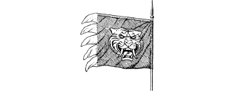

3
Your tracking skills tell you that this hut was abandoned by its owner earlier this morning. Its log stove is still warm, and a plate of food lies untouched on the table. You share out the food and dry your clothes by the stove. Sergeant Paviz keeps watch at the window in case a patrol should come by to search the hut.
As midnight approaches, the enemy activity in Zuda decreases. Gildas suggests you should leave during the night to minimize risk of discovery; the darkness provides invaluable cover. You agree, and after midnight you set out for the town.
Bhanarian soldiers are billeted in most of the shops and houses. You keep to the back streets to avoid the patrols, but every alley and avenue leads to the market square at the centre of the town, and you cannot avoid passing through this area. In the middle of the square a magnificent tent has been erected. High above flies a scarlet flag emblazoned with a gold tiger’s head. This is Sejanoz’s personal flag and it signifies that the Autarch is here in person. A dozen of his best soldiers guard his tent, and parked beside its entrance are two strange machines.
{kind=link}

The first is an elaborate shrine. It is fashioned from gold and jewels and has been crafted into the likeness of a tiger’s head. Two huge ivory fangs protrude from its jaw and its jewelled eyes glow with a flickering scarlet fire.
The second is a golden chariot. This vehicle has no team of horses to pull it, for it needs no animals to cause it to move. It is a sky chariot, powered by the same magical forces that enable Cloud-dancer to soar through the air.
You are observing the shrine from the cover of a doorway when suddenly the head slowly rotates in your direction, and two pencil-thin beams of red light shoot from its eyes. You duck back, but it is too late—the shrine has detected your presence. The guards at the tent raise the alarm and a troop of Bhanarians come running from the doorway of a nearby hall.
‘Run!’ cries Gildas, as the soldiers come rushing towards you.
To continue, turn to 86.